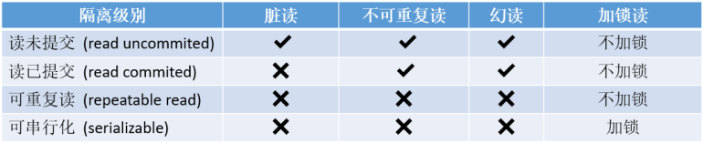

介绍
事务就是是一组数据操作，事务内的操作要么就是全部成功，要么就是全部失败，若做了一部分但是只要有一步失败，就要回滚所有操作，InnoDB支持事务，MyISAM不支持事务
当有多个客户端同时操作数据库的某张表，或客户端开启各自事务操作数据库中的数据时，MySQL提供了一种机制，可以让不同的事务在操作数据时，具有隔离性。从而保证数据的一致性
如果没有隔离性就会产生脏读、不可重复读、幻读的问题
脏读：当一个事务正在访问数据，并对数据进行修改还没有提交，这时另外一个事务也访问这个数据，然后使用了这个数据
不可重复读：在一个事务内，多次读同一数据。在这个事务还没有结束时，另一个事务也访问同一数据并修改提交，那么第一个事务两次读到的的数据可能是不一样的。
幻读：一个事务对一个表中的数据进行了修改，这种修改涉及到表中的全部数据行。同时，第二个事务也修改这个表中的数据，这种修改是向表中插入一行新数据。那么，以后就会发生操作第一个事务的用户发现表中还有没有修改的数据行，就好象发生了幻觉一样
（不可重复读的重点是修改：同样的条件，读取过的数据，再次读取出来发现值不一样了；幻读的重点在于新增或者删除：同样的条件，第1次和第2次读出来的记录数不一样
丢失更新：一个事务的更新操作会被另外一个事务的更新操作所覆盖，从而导致数据的不一致
为了解决这些数据不一致的问题：mysql实现了四种隔离级别

可重复读是InnoDB默认的隔离级别，在SQL标准中，是无法避免幻读问题的，但是InnoDB避免了幻读问题
事务的ACID特征
原子性(Atomicity)：事务是应用中最小的执行单位，事务是应用中不可再分的最小逻辑执行体
一致性(Consistency)：事务执行的结果，必须使数据库从一个一致性状态，变到另一个一致性状态。当数据库只包含事务成功提交的结果时，数据库处于一致性状态。如果系统运行发生中断，某个事务尚未完成而被迫中断，而改未完成的事务对数据库所做的修改已被写入数据库，此时数据库就处于一种不一致的状态。因此一致性是通过原子性来保证的
隔离性(Isolation)：各个事务的执行互不干扰，任意一个事务的内部操作对其他并发事务都是隔离的。并发执行的事务之间不能看到对方的中间状态，并发执行的事务之间不能互相影响
持久性(Durability)：持久性是指一个事务一旦被提交，它对数据库所做的改变都要记录到永久存储
事务的实现原理
实现原子性 undo log
innoDB实现回滚，靠的是undo log：当事务对数据库进行修改时，InnoDB会生成对应的undo log；如果事务执行失败或调用了rollback，导致事务需要回滚，便可以利用undo log中的信息将数据回滚到修改之前的样子
undo log属于逻辑日志，它记录的是sql执行相关的信息。当发生回滚时，InnoDB会根据undo log的内容做与之前相反的工作：对于每个insert，回滚时会执行delete；对于每个delete，回滚时会执行insert；对于每个update，回滚时会执行一个相反的update，把数据改回去
实现持久性 redo log
数据库中的数据是存放在磁盘中的，如果每次读写数据都需要磁盘IO，效率会很低。为此，InnoDB提供了cache，cache中包含了磁盘中部分数据页的映射，当从数据库读取数据时，会首先从cache中读取，如果缓存未命中，则从磁盘读取后放入cache；当向数据库写入数据时，会首先写入cache，cache中修改的数据会定期刷新到磁盘中（这一过程称为刷脏）
虽然这样效率高，但是也产生了行的问题，如果MySQL宕机，而此时cache中修改的数据还没有刷新到磁盘，就会导致数据的丢失，事务的持久性无法保证
inoDB使用redo log来解决这个问题：当数据修改时，除了修改cache中的数据，还会在redo log记录这次操作（redo log文件的文件描述符用fctrl设置为O_DIRECT 表示不经过缓存直接写入磁盘中）当事务提交时，会调用fsync接口对redo log进行刷盘。如果MySQL宕机，重启时可以读取redo log中的数据，对数据库进行恢复。redo log采用的是WAL（预写式日志）所有修改先写入日志，再更新到cache，保证了数据不会因MySQL宕机而丢失，从而满足了持久性要求
redo log也需要在事务提交时将日志写入磁盘，它比直接将cache中修改的数据写入磁盘(即刷脏)要快，主要有以下两方面的原因：
（1）刷脏是随机IO，因为每次修改的数据位置随机，但写redo log是追加操作，属于顺序IO
（2）刷脏是以数据页（Page）为单位的，MySQL默认页大小是16KB，一个Page上一个小修改都要整页写入；而redo log中只包含真正需要写入的部分，无效IO大大减少。
实现隔离性
锁机制
一个事务写操作对另一个事务写操作的影响：锁机制保证隔离性
事务在修改数据之前，需要先获得相应的锁；获得锁之后，事务便可以修改数据；该事务操作期间，这部分数据是锁定的，其他事务如果需要修改数据，需要等待当前事务提交或回滚后释放锁
MVCC
一个事务写操作对另一个事务读操作的影响：MVCC保证隔离性
repeatable read解决脏读、不可重复读、幻读等问题，使用的是多版本的并发控制协议MVCC，
MVCC最大的优点是读不加锁，因此读写不冲突，并发性能好
InnoDB实现MVCC原理：
InnoDB中每行数据都有隐藏列，隐藏列中包含了本行数据的事务id（申请顺序严格递增）、指向undo log的指针等，而每条undo log也会指向更早版本的undo log，从而形成一条版本链，通过隐藏列和版本链，MySQL可以将数据恢复到指定版本；如果我们读取的行正在执行DELETE或者UPDATE操作，这时就不会去等待锁释放后再读取，而是直接去读取行的一个快照数据ReadView，它由所有未提交事务id数组，和已创建的最大事务id组成，查询的数据结果需要跟ReadView做比对从而得到快照结果，版本链比对规则：
- 如果数据行中事务id<数组里面最小的id，则表示这条数据的版本是已提交的事务生成的，这个数据是可见的
- 如果数据行中事务id>已创建的最大事务id，则表示这个版本是由将来启动的事务生成的，这个数据是不可见的
- 数组里面最小的id<=如果数据行中事务id<=已经创建的最大事务id，则分两种情况，若数据行中的事务id在数组中，则表示这个版本是由还没有提交的事务生成的，不可见（如果是自己当前的事务id则可见）；若不在数组中，则表示这个版本是已经提交了的事务生成的，可见
MVCC只在READ COMMITTED和REPEATABLE READ两个隔离级别下工作。由于READ UNCOMMITTED总会读取在最新的数据，而SERIALIZABLE会对所有读取的行加锁，所以这两种都不兼容MVCC
实现一致性
一致性是事务追求的最终目标，保证原子性、持久性和隔离性，如果这些特性无法保证，事务的一致性也无法保证，数据库本身提供保障，例如不允许向整形列插入字符串值、字符串长度不能超过列的限制等，应用层面进行保障，例如如果转账操作只扣除转账者的余额，而没有增加接收者的余额，无论数据库实现的多么完美，也无法保证状态的一致
数据库锁
数据库锁一般可以分为两类，一个是悲观锁，一个是乐观锁
乐观锁一般是指用户自己实现的一种锁机制，假设认为数据一般情况下不会造成冲突，所以在数据进行提交更新的时候，才会正式对数据的冲突与否进行检测，如果发现冲突了，则让返回用户错误的信息，让用户决定如何去做。乐观锁的实现方式一般使用版本号和时间戳
悲观锁一般就是我们通常说的数据库锁机制，悲观锁主要分表锁、行锁、页锁。在MyISAM中只用到表锁，不会有死锁的问题，锁的开销也很小，但是相应的并发能力很差。innodb实现了行级锁和表锁，锁的粒度变小了，并发能力变强，但是相应的锁的开销变大，很有可能出现死锁。
表锁和行锁都分为共享锁和排他锁，而更新锁是为了解决行锁升级（共享锁升级为独占锁）的死锁问题
共享锁：又叫读锁，其他事务可以继续加共享锁，但是不能继续加排他锁
排他锁：又叫写锁，一旦加了写锁之后，其他事务就不能加锁了
innodb中表锁和行锁一起用，所以为了提高效率才会有意向锁（意向共享锁和意向排他锁）
锁算法
记录锁
记录锁是锁住记录的，锁住的是索引记录，而不是我们真正的数据记录：
如果锁的是非主键索引，会在自己的索引上面加锁之后然后再去主键上面加锁锁住
如果表上没有索引(包括没有主键)，则会使用隐藏的主键索引进行加锁
如果要锁的没有索引，则会进行全表记录加锁
间隙锁
间隙锁顾名思义锁间隙，不锁记录。锁间隙的意思就是锁定某一个范围，间隙锁又叫gap锁，其不会阻塞其他的gap锁，但是会阻塞插入间隙锁，这也是用来防止幻读的关键
next-key 锁
这个锁本质是记录锁加上gap锁。在可重复读隔离级别下，InnoDB对于行的扫描锁定都是使用此算法，但是如果查询扫描中有唯一索引会退化成只使用记录锁
因为唯一索引能确定行数，而其他索引不能确定行数，需要使用间隙锁防止其他事务中再次添加这个索引的数据造成幻读。可重复读隔离级别下，InnoDB使用Next-Key Lock算法避免了幻读
插入意向锁
插入意向锁是在插入的时候产生的，在多个事务同时写入不同数据至同一索引间隙的时候，并不需要等待其他事务完成，不会发生锁等待
假设有一个记录索引包含键值 4 和 7，不同的事务分别插入 5 和 6，每个事务都会产生一个加在 4-7 之间的插入意向锁，获取在插入行上的排它锁，但是不会被互相锁住，因为数据行并不冲突
这里要说明的是如果有间隙锁了，插入意向锁会被阻塞
死锁检测
死锁是指两个或两个以上的事务在执行过程中，因争夺资源而造成的一种互相等待的现象。说明有等待才会有死锁，解决死锁可以通过去掉等待，比如回滚事务
解决死锁的两个办法：
等待超时：当某一个事务等待超时之后回滚该事务，另外一个事务就可以执行了
但是这样做效率较低，会出现等待时间，还有个问题是如果这个事务所占的权重较大，已经更新了很多数据了，但是被回滚了，就会导致资源浪费
等待图：等待图用来描述事务之间的等待关系，当这个图如果出现回路，事务就出现回滚，通常来说InnoDB会选择回滚权重较小的事务，也就是undo较小的事务，在现版本的InnoDB中，通常采用深度优先搜索(老版本使用递归)来检测死锁的存在
如何防止死锁：
以固定的顺序访问表和行，交叉访问更容易造成事务等待回路
尽量避免大事务占有的资源锁越多，越容易出现死锁。建议拆成小事务
降低隔离级别，如果业务允许(上面也分析了，某些业务并不能允许)，将隔离级别调低也是较好的选择，比如将隔离级别从RR调整为RC，可以避免掉很多因为gap锁造成的死锁
为表添加合理的索引，防止没有索引出现表锁，出现死锁的概率会突增